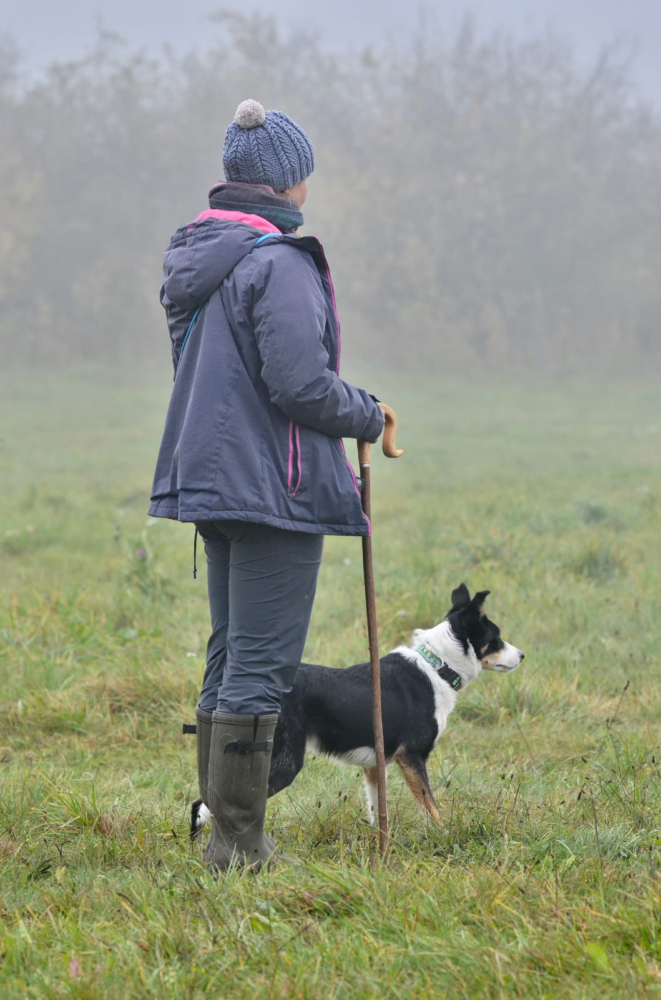

O mně
Vše začalo koupí první border kolie před více než deseti lety, s ní jsem vyzkoušela mnoho sportů, ale nejvíce mě nadchlo právě pasení. A tak se z pouhé teorie a koníčku stalo pasení ovcí mou nedílnou součástí.
A trénink se neobejde bez ovcí, a tak jsem před lety pořídila 4 ovečky
A stejně jak se rozšiřuje má smečka, tak se rozšiřuje i naše stádo, které se aktuálně skládá ze 40 vřesovek a jejich kříženců.
První pasecí krůčky jsem absolvovala pod vedením Daniely Rájové, se kterou stále spolupracuji. Aktivně se účastním závodů nejen v ČR.
Pravidelně se vzdělávám a účastním se seminářů s výbornými handlery:
- 2019 Nicolas Annaloro
- 2017, 2019 Philipe Heinz
- 2018 Eliane Verboven
- 2016 Susanne Leujez
- 2015 Ludwig Horst
- 2014 Wolfgang Lipczenko
- 2023 Allistair Lyttle
- 2022 Hendrik Kienker
- 2021, 2022 Gianluigi Bertazzoli
- 2019, 2022 Tomasz Nowakowski
- 2018,2021,2023 Marta Chmiel
- 2021 Luca Fini
